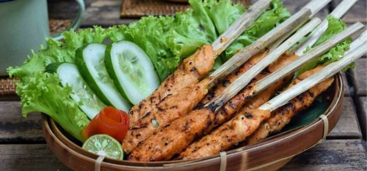

Sate Pusut Khas Lombok Yang Menggoda Selera
Bahan-bahan :
150 gr daging sapi giling250 gr (1 butir) kelapa parut setengah tua
5 lembar daun jeruk, iris tipis
1 bungkus royko sapi @10 gr (sesuai selera)
1/2 sdt garam
20 buah tusuk sate
secukupnya minyak goreng
haluskan:
3 siung bawang putih
4 siung bawang merah @50 gr
1 buah cabe merah besar, buang biji
10 buah cabe rawit merah (skip kalo gg bisa pedas)
35 butir merica
1/2 sdt ketumbar
Langkah-langkah :
- Campurkan kelapa parut dg bumbu halus, lalu tambahkan royko,garam dan daun jeruk aduk rata, koreksi rasa jika perlu.
- Tambahkan daging giling, aduk rata.
- Ambil sejuput atau 1-2 sdm adonan, rekatkan pada tusuk sate sambil ditekan2 agar adonan menempel. lalukan hingga adonan habis
- Tuang minyak goreng kedalam panci, lalu panaskan hingga mendidih.
- Goreng sate pada minyak panas hingga matang (indikator matang: keemasan atau kecoklatan, sesuai selera). pastikan sate terendam minyak semua. angkat tiriskan
- Sajikan sate pusut dg nasi hangat dan pelecing kangkung atau oseng kacang panjang.
“Budaya bukan saja sesuatu yang kuno dan tradisional. Budaya adalah sesuatu yang organik. Setiap lagu baru, pakaian jenis baru, film baru, cerita yang baru... semua itu adalah hasil budaya. Budaya itu hidup dan terus berkembang.”― Maisie Junardy